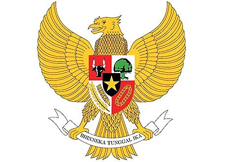

- 印尼国旗
- 印尼国徽
- 印尼标志性建筑
- 印尼地理位置
印尼概况
印尼为东南亚国家之一
人口概况
2.15亿(世界银行数据), 世界第四人口大国。有100多个民族, 其中爪哇族47%, 巽他族14%, 马都拉族7%, 印尼华人5%。民族语言200多种, 通用印尼语。印尼无国教, 但规定一定要信仰宗教不然视为共产党(共产主义及其相关活动在印尼为非法), 约87%的人口信奉伊斯兰教, 是世界上穆斯林人口最多的国家。6.1%的人口信奉基督教新教, 3.6%信奉天主教, 其余信奉印度教、佛教和原始拜物教等。
印尼经济
1968年以来，特别是80年代调整经济结构和产品结构后，经济发
雅加达的轻轨铁路
展取得一定成就。第一个25年长期建设计划中，国民生产总值年均增长6%，通货膨胀控制在10%以内。1994年4月进入第二个25年长期建设计划，即经济起飞阶段。政府进一步放宽投资限制，吸引外资，并采取措施大力扶持中小企业、发展旅游、增加出口。1997年受东南亚金融危机重创，经济大幅衰退，货币贬值、通膨高踞。为摆脱经济困境，政府被迫向国际货币基金组织（IMF）求援。1999年经济开始缓慢复苏，但整改阻力较大，私企外债、银行呆账等问题难以解决。
2014年1月10日，印尼总统苏西洛称印尼国民生产总值约达8241.86万亿盾（约6760.8亿美元），并成为全世界第15大经济体。从2009年开始，印尼各项经济建设快速发展，开始进入了中等收入国家之列，按照国民经济总体实力等标准，印尼已被国际相关机构评价为世界第十七大经济体，印尼力争在2025年跻身世界经济十强，2050年进入全球前六名。
外交关系
印度尼西亚奉行独立自主、不结盟的积极外交政策, 主张平等、相互尊重和大国平衡原则, 积极参与国际和地区事务。主张改组联合国, 扩大安理会。反对美国等西方国家把经济与人权、环境等挂钩。促进南南合作和南北对话, 积极参与亚太经济合作。
经贸往来
1950年4月13日建交。1967年10月30日中断外交关系。1990年7月, 印尼外长阿拉塔斯访华期间两国发表复交联合公报, 决定自8月8日起正式恢复外交关系。